<h1>List of cards</h1>
Click on a card and then browse the previous card or the following card from the current card.<BR>There are at most 25 cards per page<BR>The card order is random (at HTML compile time).<ul><LI><center><A HREF="card-375.html" target="_blank">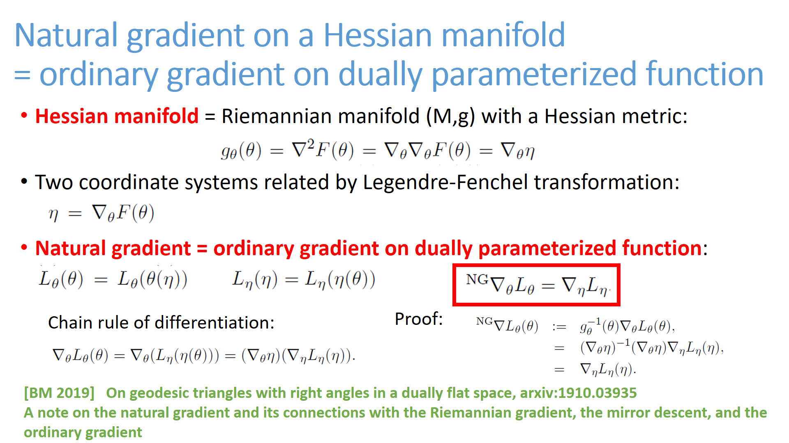</A>(375)</LI>
<LI><center><A HREF="card-376.html" target="_blank">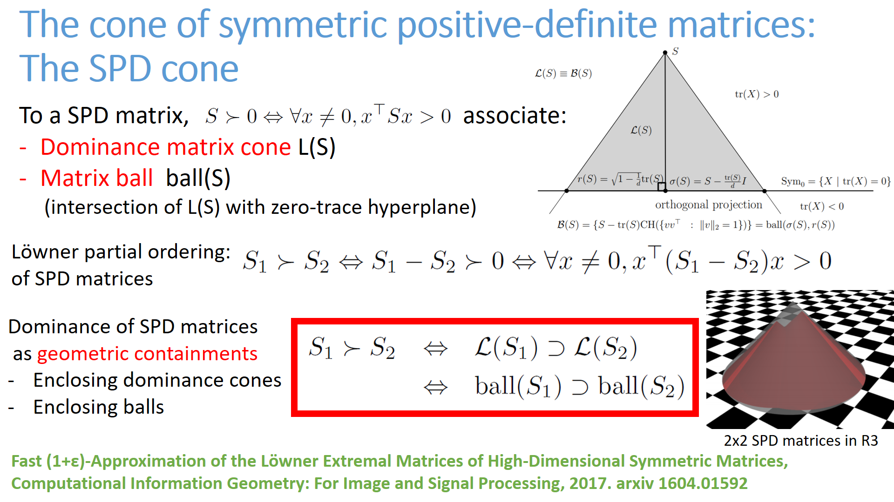</A>(376)</LI>
<LI><center><A HREF="card-377.html" target="_blank"></A>(377)</LI>
<LI><center><A HREF="card-378.html" target="_blank"></A>(378)</LI>
<LI><center><A HREF="card-379.html" target="_blank">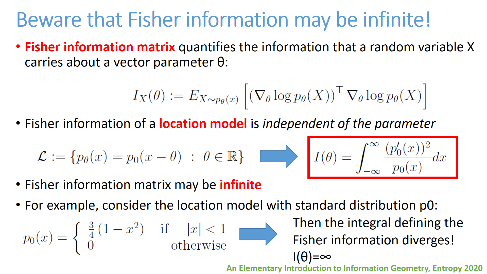</A>(379)</LI>
<LI><center><A HREF="card-380.html" target="_blank"></A>(380)</LI>
<LI><center><A HREF="card-381.html" target="_blank"></A>(381)</LI>
<LI><center><A HREF="card-382.html" target="_blank">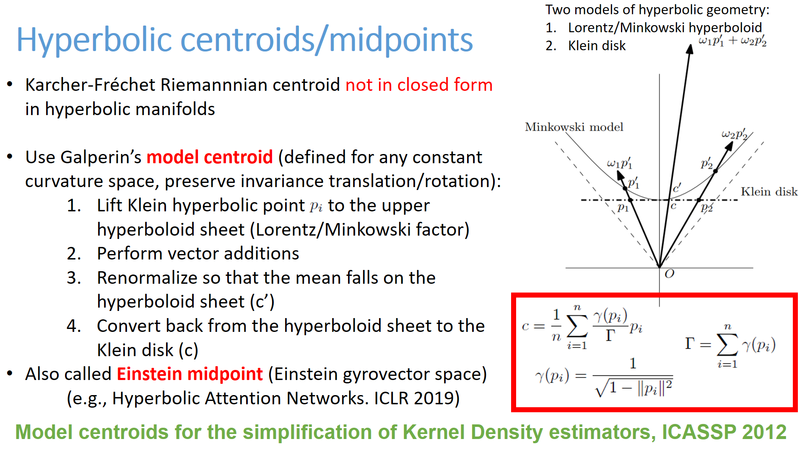</A>(382)</LI>
<LI><center><A HREF="card-383.html" target="_blank">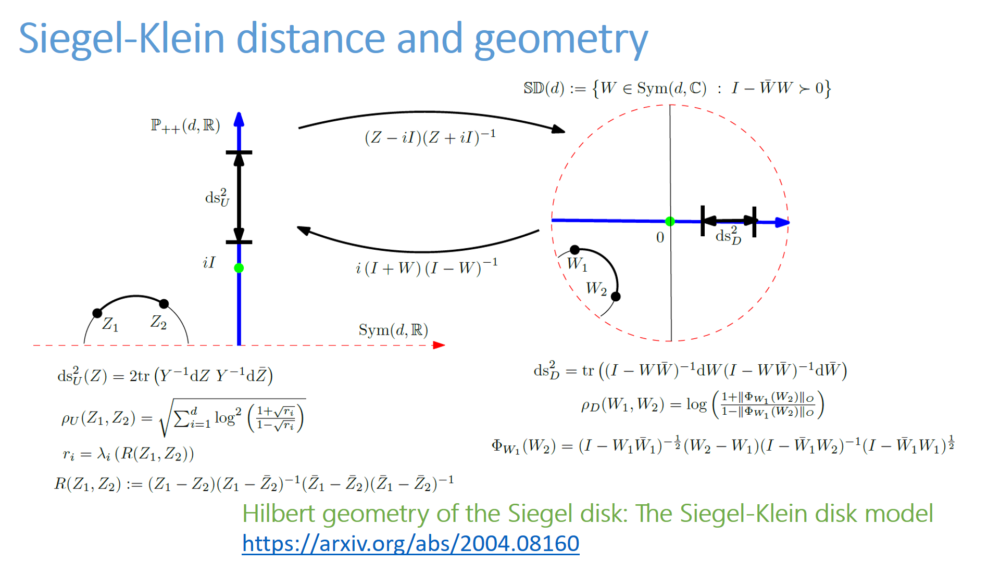</A>(383)</LI>
<LI><center><A HREF="card-384.html" target="_blank">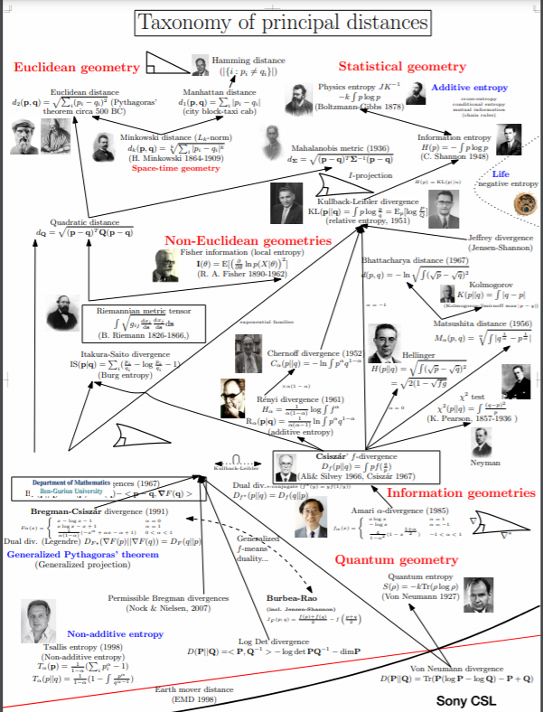</A>(384)</LI>
<LI><center><A HREF="card-385.html" target="_blank">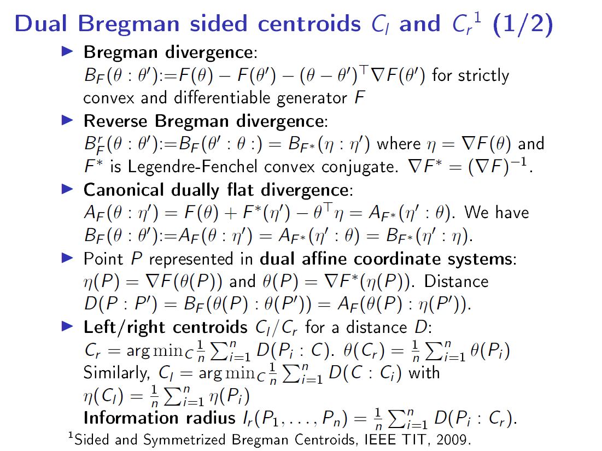</A>(385)</LI>
<LI><center><A HREF="card-386.html" target="_blank"></A>(386)</LI>
<LI><center><A HREF="card-387.html" target="_blank"></A>(387)</LI>
<LI><center><A HREF="card-388.html" target="_blank"></A>(388)</LI>
<LI><center><A HREF="card-389.html" target="_blank">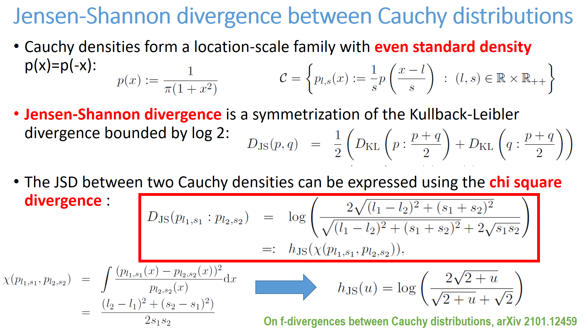</A>(389)</LI>
<LI><center><A HREF="card-390.html" target="_blank">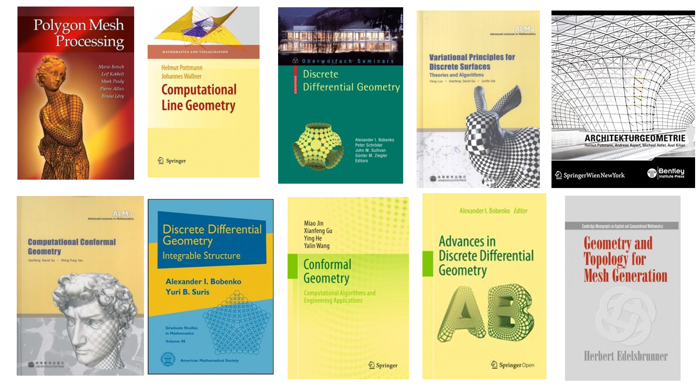</A>(390)</LI>
<LI><center><A HREF="card-391.html" target="_blank">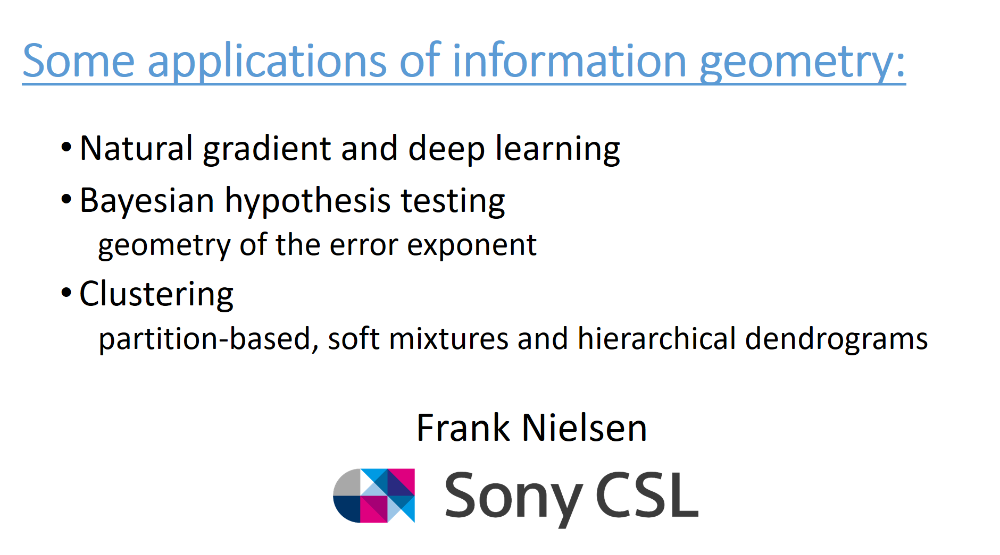</A>(391)</LI>
<LI><center><A HREF="card-392.html" target="_blank">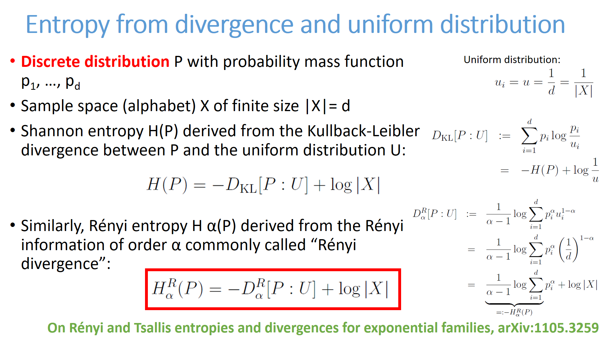</A>(392)</LI>
<LI><center><A HREF="card-393.html" target="_blank">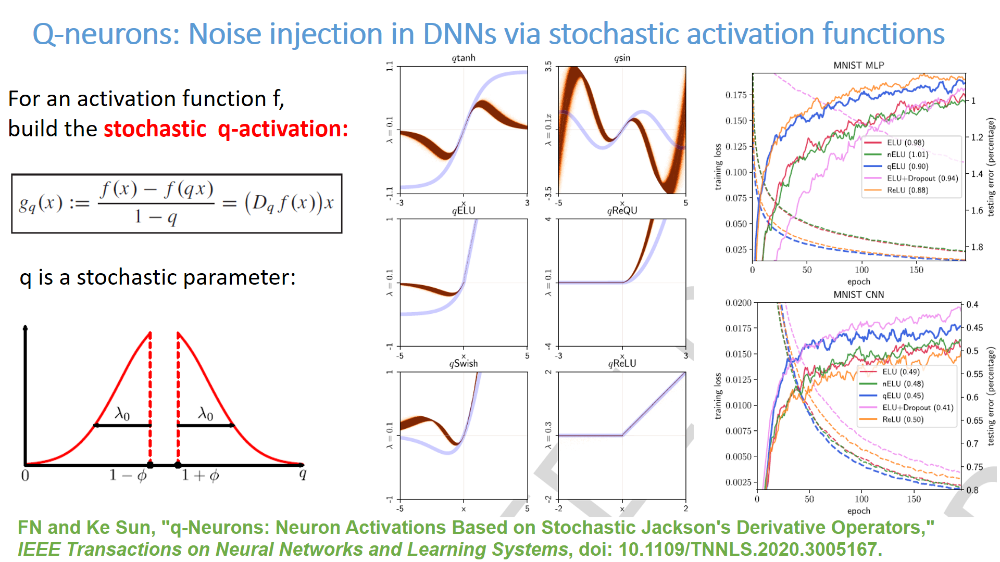</A>(393)</LI>
<LI><center><A HREF="card-394.html" target="_blank"></A>(394)</LI>
<LI><center><A HREF="card-395.html" target="_blank">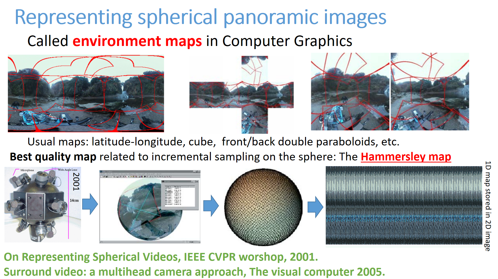</A>(395)</LI>
<LI><center><A HREF="card-396.html" target="_blank">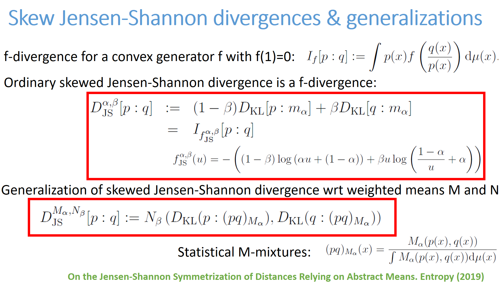</A>(396)</LI>
<LI><center><A HREF="card-397.html" target="_blank"></A>(397)</LI>
<LI><center><A HREF="card-398.html" target="_blank"></A>(398)</LI>
<LI><center><A HREF="card-399.html" target="_blank"></A>(399)</LI>
</ul><BR> <A HREF="index14.html">Previous card page</A>&nbsp;&nbsp;&nbsp; <A HREF="index16.html">Next card page</A>
